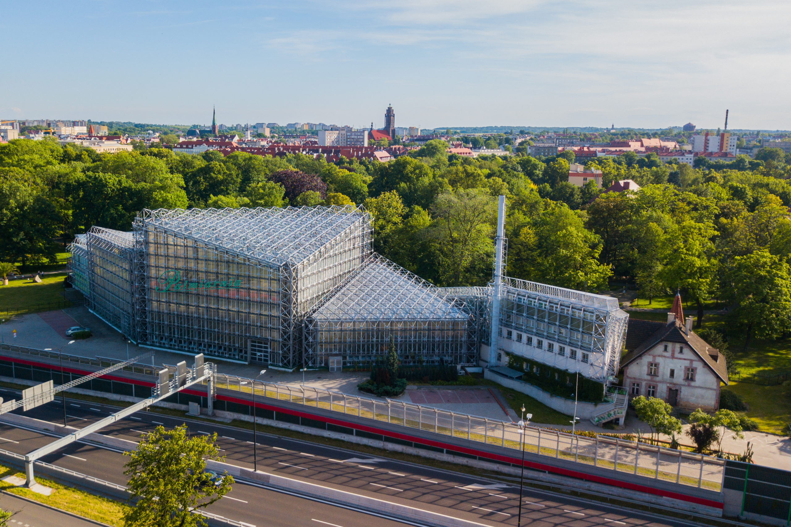

Palmiarnia
Lokalizacja
Palmiarnia usytuowana jest przy ulicy Aleksandra Fredry w Gliwicach, na terenie parku im. Fryderyka Chopina.
Informacje ogólne
Budynek palmiarni to nowoczesna konstrukcja architektoniczna o powierzchni użytkowej 2000 m2. Rośnie w nim ponad 5600 roślin, a najstarsze okazy mają ponad 150 lat.
Palmiarnia jest podzielona na pięć pawilonów tematycznych – piąty, akwarystyczny, oddano do użytku w 2012. W pierwszych czterech, oprócz egzotycznych roślin, znajdują się również terraria z gadami, akwaria z żółwiami i płaszczkami, klatki z egzotycznymi papugami i kanarkami oraz terrarium z liśćcami.
Przed głównym wejściem umieszczono rzeźby Lwów leżących.
Historia
Pierwsze szklarnie na terenie obecnego parku Chopina w Gliwicach skonstruowano już około roku 1880. Obecna palmiarnia powstała w 1924 i od tego czasu była wielokrotnie przebudowywana.
Pawilony
Palmiarnia podzielona jest na 5 pawilonów:
- pawilon I - rośliny użytkowe
- pawilon II - rośliny tropikalne
- pawilon III - historyczny
- pawilon IV - sukulenty
- pawilon V - akwaria